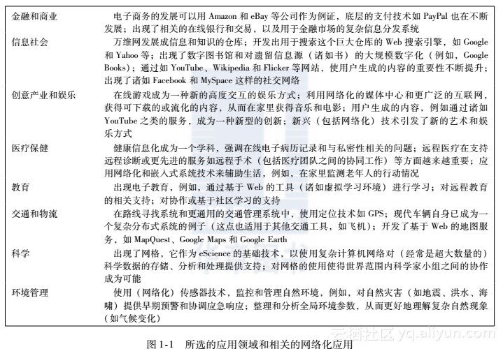

<!DOCTYPE html>
<html>
<head><meta name="generator" content="Hexo 3.8.0">

    <!--[if lt IE 9]>
        <style>body {display: none; background: none !important} </style>
        <meta http-equiv="Refresh" Content="0; url=//outdatedbrowser.com/" />
    <![endif]-->

<meta charset="utf-8">
<meta http-equiv="X-UA-Compatible" content="IE=edge, chrome=1">
<meta name="viewport" content="width=device-width, initial-scale=1, maximum-scale=1, user-scalable=no">
<meta name="format-detection" content="telephone=no">
<meta name="author" content="Shao Ze wei">


<meta name="description" content="本文是为了操作系统的课堂任务而整理的一些资料。">
<meta name="keywords" content="分布式系统介绍">
<meta property="og:type" content="article">
<meta property="og:title" content="分布式系统">
<meta property="og:url" content="http://yoursite.com/2018/12/07/分布式系统/index.html">
<meta property="og:site_name" content="不忘初心">
<meta property="og:description" content="本文是为了操作系统的课堂任务而整理的一些资料。">
<meta property="og:locale" content="default">
<meta property="og:image" content="http://yoursite.com/2018/12/07/分布式系统/1.png">
<meta property="og:updated_time" content="2018-12-09T09:05:02.679Z">
<meta name="twitter:card" content="summary">
<meta name="twitter:title" content="分布式系统">
<meta name="twitter:description" content="本文是为了操作系统的课堂任务而整理的一些资料。">
<meta name="twitter:image" content="http://yoursite.com/2018/12/07/分布式系统/1.png">

<link rel="apple-touch-icon" href="/apple-touch-icon.png">


    <link rel="alternate" href="/atom.xml" title="不忘初心" type="application/atom+xml">


    <link rel="shortcut icon" href="/favicon.png">


    <link href="//cdn.bootcss.com/animate.css/3.5.1/animate.min.css" rel="stylesheet">


    <link href="//cdn.bootcss.com/fancybox/2.1.5/jquery.fancybox.min.css" rel="stylesheet">


    <script src="//cdn.bootcss.com/pace/1.0.2/pace.min.js"></script>
    <link href="//cdn.bootcss.com/pace/1.0.2/themes/blue/pace-theme-minimal.css" rel="stylesheet">


<link rel="stylesheet" href="/css/style.css">


<link href="//cdn.bootcss.com/font-awesome/4.6.3/css/font-awesome.min.css" rel="stylesheet">


<title>分布式系统 | 不忘初心</title>

<script src="//cdn.bootcss.com/jquery/2.2.4/jquery.min.js"></script>
<script src="//cdn.bootcss.com/clipboard.js/1.5.10/clipboard.min.js"></script>

<script>
    var yiliaConfig = {
        fancybox: true,
        animate: true,
        isHome: false,
        isPost: true,
        isArchive: false,
        isTag: false,
        isCategory: false,
        fancybox_js: "//cdn.bootcss.com/fancybox/2.1.5/jquery.fancybox.min.js",
        scrollreveal: "//cdn.bootcss.com/scrollReveal.js/3.1.4/scrollreveal.min.js",
        search: true
    }
</script>


    <script>
        yiliaConfig.jquery_ui = [true, "//cdn.bootcss.com/jqueryui/1.10.4/jquery-ui.min.js", "//cdn.bootcss.com/jqueryui/1.10.4/css/jquery-ui.min.css"];
    </script>


    <script> yiliaConfig.rootUrl = "\/";</script>


</head></html>
<body>
  <div id="container">
    <div class="left-col">
    <div class="overlay"></div>
<div class="intrude-less">
    <header id="header" class="inner">
        <a href="/" class="profilepic">
            
        </a>
        <hgroup>
          <h1 class="header-author"><a href="/">Shao Ze wei</a></h1>
        </hgroup>

        

        
            <form id="search-form">
            <input type="text" id="local-search-input" name="q" placeholder="search..." class="search form-control" autocomplete="off" autocorrect="off" searchonload="">
            <i class="fa fa-times" onclick="resetSearch()"></i>
            </form>
            <div id="local-search-result"></div>
            <p class="no-result">No results found <i class="fa fa-spinner fa-pulse"></i></p>
        


        
            <div id="switch-btn" class="switch-btn">
                <div class="icon">
                    <div class="icon-ctn">
                        <div class="icon-wrap icon-house" data-idx="0">
                            <div class="birdhouse"></div>
                            <div class="birdhouse_holes"></div>
                        </div>
                        <div class="icon-wrap icon-ribbon hide" data-idx="1">
                            <div class="ribbon"></div>
                        </div>
                        
                        <div class="icon-wrap icon-link hide" data-idx="2">
                            <div class="loopback_l"></div>
                            <div class="loopback_r"></div>
                        </div>
                        
                        
                        <div class="icon-wrap icon-me hide" data-idx="3">
                            <div class="user"></div>
                            <div class="shoulder"></div>
                        </div>
                        
                    </div>
                    
                </div>
                <div class="tips-box hide">
                    <div class="tips-arrow"></div>
                    <ul class="tips-inner">
                        <li>菜单</li>
                        <li>标签</li>
                        
                        <li>友情链接</li>
                        
                        
                        <li>关于我</li>
                        
                    </ul>
                </div>
            </div>
        

        <div id="switch-area" class="switch-area">
            <div class="switch-wrap">
                <section class="switch-part switch-part1">
                    <nav class="header-menu">
                        <ul>
                        
                            <li><a href="/">主页</a></li>
                        
                            <li><a href="/archives/">所有文章</a></li>
                        
                            <li><a href="/tags/">标签云</a></li>
                        
                            <li><a href="/about/">关于我</a></li>
                        
                        </ul>
                    </nav>
                    <nav class="header-nav">
                        <ul class="social">
                            
                                <a class="fa Email" href="/1005204767@qq.com" title="Email"></a>
                            
                                <a class="fa GitHub" href="https://github.com/loveshrimp" title="GitHub"></a>
                            
                                <a class="fa RSS" href="/atom.xml" title="RSS"></a>
                            
                        </ul>
                    </nav>
                </section>
                
                
                <section class="switch-part switch-part2">
                    <div class="widget tagcloud" id="js-tagcloud">
                        <ul class="tag-list"><li class="tag-list-item"><a class="tag-list-link" href="/tags/BFS/">BFS</a></li><li class="tag-list-item"><a class="tag-list-link" href="/tags/C-函数/">C++函数</a></li><li class="tag-list-item"><a class="tag-list-link" href="/tags/C-语法/">C++语法</a></li><li class="tag-list-item"><a class="tag-list-link" href="/tags/WinSocket/">WinSocket</a></li><li class="tag-list-item"><a class="tag-list-link" href="/tags/web-server/">web_server</a></li><li class="tag-list-item"><a class="tag-list-link" href="/tags/分布式系统介绍/">分布式系统介绍</a></li><li class="tag-list-item"><a class="tag-list-link" href="/tags/动态规划/">动态规划</a></li><li class="tag-list-item"><a class="tag-list-link" href="/tags/多线程/">多线程</a></li><li class="tag-list-item"><a class="tag-list-link" href="/tags/字符串/">字符串</a></li><li class="tag-list-item"><a class="tag-list-link" href="/tags/字符串匹配/">字符串匹配</a></li><li class="tag-list-item"><a class="tag-list-link" href="/tags/排序/">排序</a></li><li class="tag-list-item"><a class="tag-list-link" href="/tags/正则表达式/">正则表达式</a></li><li class="tag-list-item"><a class="tag-list-link" href="/tags/网络通信/">网络通信</a></li><li class="tag-list-item"><a class="tag-list-link" href="/tags/进行中/">进行中</a></li></ul>
                    </div>
                </section>
                
                
                
                <section class="switch-part switch-part3">
                    <div id="js-friends">
                    
                      <a class="main-nav-link switch-friends-link" href="https://hexo.io">Hexo</a>
                    
                      <a class="main-nav-link switch-friends-link" href="https://pages.github.com/">GitHub</a>
                    
                    </div>
                </section>
                

                
                
                <section class="switch-part switch-part4">
                
                    <div id="js-aboutme">菜鸡一个</div>
                </section>
                
            </div>
        </div>
    </header>                
</div>
    </div>
    <div class="mid-col">
      <nav id="mobile-nav">
      <div class="overlay">
          <div class="slider-trigger"></div>
          <h1 class="header-author js-mobile-header hide"><a href="/" title="回到主页">Shao Ze wei</a></h1>
      </div>
    <div class="intrude-less">
        <header id="header" class="inner">
            <a href="/" class="profilepic">
                
            </a>
            <hgroup>
              <h1 class="header-author"><a href="/" title="回到主页">Shao Ze wei</a></h1>
            </hgroup>
            
            <nav class="header-menu">
                <ul>
                
                    <li><a href="/">主页</a></li>
                
                    <li><a href="/archives/">所有文章</a></li>
                
                    <li><a href="/tags/">标签云</a></li>
                
                    <li><a href="/about/">关于我</a></li>
                
                <div class="clearfix"></div>
                </ul>
            </nav>
            <nav class="header-nav">
                        <ul class="social">
                            
                                <a class="fa Email" target="_blank" href="/1005204767@qq.com" title="Email"></a>
                            
                                <a class="fa GitHub" target="_blank" href="https://github.com/loveshrimp" title="GitHub"></a>
                            
                                <a class="fa RSS" target="_blank" href="/atom.xml" title="RSS"></a>
                            
                        </ul>
            </nav>
        </header>                
    </div>
    <link class="menu-list" tags="标签" friends="友情链接" about="关于我">
</nav>
      <div class="body-wrap"><article id="post-分布式系统" class="article article-type-post" itemscope="" itemprop="blogPost">
  
    <div class="article-meta">
      <a href="/2018/12/07/分布式系统/" class="article-date">
      <time datetime="2018-12-07T09:10:41.000Z" itemprop="datePublished">2018-12-07</time>
</a>


    </div>
  
  <div class="article-inner">
    
      <input type="hidden" class="isFancy">
    
    
      <header class="article-header">
        
  
    <h1 class="article-title" itemprop="name">
      分布式系统
    </h1>
  

      </header>
      
      <div class="article-info article-info-post">
        
    <div class="article-category tagcloud">
    <a class="article-category-link" href="/categories/其他/">其他</a>
    </div>


        
    <div class="article-tag tagcloud">
        <ul class="article-tag-list"><li class="article-tag-list-item"><a class="article-tag-list-link" href="/tags/分布式系统介绍/">分布式系统介绍</a></li></ul>
    </div>

        <div class="clearfix"></div>
      </div>
      
    
    <div class="article-entry" itemprop="articleBody">
      
          
        <p>本文是为了操作系统的课堂任务而整理的一些资料。<br><a id="more"></a></p>
<h2 id="提纲"><a href="#提纲" class="headerlink" title="提纲"></a>提纲</h2><p><strong>说明</strong><br>报告要求时间:5~10分钟。<br>介绍时间安排及思路建议：（请点击左侧小标题快速查找内容）</p>
<p><strong>一.什么是分布式系统</strong>：——发展历程,适用范围</p>
<ol>
<li>分布式系统发展史</li>
<li>分布式系统概念</li>
<li>分布式系统的应用 </li>
</ol>
<p><strong>二.分布式系统的特性</strong>：——优缺点，对比分析</p>
<ol>
<li>列举相关特性，简单介绍。</li>
<li>和传统系统构架做对比。 </li>
</ol>
<p><strong>三.分布式系统的未来</strong>：——未来展望</p>
<ol>
<li>分析面临的挑战</li>
<li>分析未来形势<h2 id="什么是分布式系统"><a href="#什么是分布式系统" class="headerlink" title="什么是分布式系统"></a>什么是分布式系统</h2><h3 id="分布式系统发展史"><a href="#分布式系统发展史" class="headerlink" title="分布式系统发展史"></a>分布式系统发展史</h3><blockquote>
<p>首先讲讲发展史。</p>
</blockquote>
</li>
</ol>
<p>参考网站：</p>
<p><a href="https://www.infoq.cn/article/the-evolution-of-distributed-systems" target="_blank" rel="noopener">分布式系统发展史</a><br><a href="https://zhuanlan.zhihu.com/p/31392387" target="_blank" rel="noopener">操作系统的发展过程</a></p>
<h3 id="分布式系统的概念"><a href="#分布式系统的概念" class="headerlink" title="分布式系统的概念"></a>分布式系统的概念</h3><blockquote>
<p>引出分布式系统的定义，再做简单的介绍</p>
<ul>
<li>定义（概念）</li>
<li>分类</li>
</ul>
</blockquote>
<p>参考网站：<br><a href="http://www.baike.com/wiki/%E5%88%86%E5%B8%83%E5%BC%8F%E6%93%8D%E4%BD%9C%E7%B3%BB%E7%BB%9F" target="_blank" rel="noopener">wiki介绍</a><br><a href="https://baike.baidu.com/item/%E5%88%86%E5%B8%83%E5%BC%8F%E8%BD%AF%E4%BB%B6%E7%B3%BB%E7%BB%9F/1847932?fromtitle=%E5%88%86%E5%B8%83%E5%BC%8F%E6%93%8D%E4%BD%9C%E7%B3%BB%E7%BB%9F&amp;fromid=2475063" target="_blank" rel="noopener">百度文库定义</a><br><a href="https://www.zhihu.com/question/20004877" target="_blank" rel="noopener">区别一下分布式系统与集群</a><br><a href="https://www.hollischuang.com/archives/655" target="_blank" rel="noopener">初识分布式系统</a><br><a href="http://www.cbdio.com/BigData/2016-03/25/content_4726270.htm" target="_blank" rel="noopener">分布式系统概念及原理介绍</a><br><a href="https://blog.csdn.net/qq_33880788/article/details/79476715" target="_blank" rel="noopener">分布式操作系统简介</a><br><a href="https://blog.csdn.net/caoshuming_500/article/details/51482566" target="_blank" rel="noopener">分布式操作系统概念</a><br><a href="https://www.cnblogs.com/xybaby/p/7787034.html#_label_5" target="_blank" rel="noopener">什么是分布式系统，如何学习分布式系统</a><br><a href="https://waylau.com/talk-about-distributed-system/" target="_blank" rel="noopener">用大白话聊聊分布式系统</a></p>
<h3 id="分布式系统的应用"><a href="#分布式系统的应用" class="headerlink" title="分布式系统的应用"></a>分布式系统的应用</h3><blockquote>
<p>举例让大家更通俗的理解分布式系统<br>细讲其中一个例子，再（ppt）展示一些其他的例子 </p>
</blockquote>
<p>细讲：<br>大型多人在线游戏（LOL？）</p>
<p>其他例子：<br><br><a href="http://www.cbdio.com/BigData/2016-03/25/content_4726270.htm" target="_blank" rel="noopener">分布式系统应用介绍</a></p>
<h2 id="分布式系统的特性"><a href="#分布式系统的特性" class="headerlink" title="分布式系统的特性"></a>分布式系统的特性</h2><h3 id="分布式系统的系统特性"><a href="#分布式系统的系统特性" class="headerlink" title="分布式系统的系统特性"></a>分布式系统的系统特性</h3><blockquote>
<p>列举一些，简单说明即可</p>
</blockquote>
<h3 id="传统架构和分布式系统架构的优缺点"><a href="#传统架构和分布式系统架构的优缺点" class="headerlink" title="传统架构和分布式系统架构的优缺点"></a>传统架构和分布式系统架构的优缺点</h3><blockquote>
<p>将两者做对比，可以表格或图的形式展示</p>
</blockquote>
<p>参考文章<br><a href="https://my.oschina.net/vshcxl/blog/1787977" target="_blank" rel="noopener">传统架构和分布式系统架构的优缺点</a><br><a href="https://blog.csdn.net/zhouhuakang/article/details/50780830" target="_blank" rel="noopener">分布式架构的优缺点</a><br><a href="http://www.west.cn/cms/wiki/server/2017-12-08/4897.html" target="_blank" rel="noopener">什么是分布式操作系统？有哪些优缺点？</a></p>
<h2 id="分布式系统面临的挑战"><a href="#分布式系统面临的挑战" class="headerlink" title="分布式系统面临的挑战"></a>分布式系统面临的挑战</h2><blockquote>
<p>分析下当前分布式操作系统发展形势即未来前景。（根据时间决定内容多少）</p>
</blockquote>
<p><a href="https://www.huoxing24.com/newsdetail/20180810191638792083.html" target="_blank" rel="noopener">分布式计算现状与未来</a><br><a href="https://wanwang.aliyun.com/info/1555886.html" target="_blank" rel="noopener">分布式文件系统未来</a><br><a href="http://www.chinastor.com/a/jishu/FS/0203200112016.html" target="_blank" rel="noopener">分布式存储的发展演变及未来展望</a></p>
<h2 id="相关资料链接"><a href="#相关资料链接" class="headerlink" title="相关资料链接"></a>相关资料链接</h2><p><strong>ppt参考</strong><br><a href="http://read.pudn.com/downloads128/ebook/541567/%B5%DA%CA%AE%D5%C2%20-%20%20%B7%D6%B2%BC%CA%BD%B2%D9%D7%F7%CF%B5%CD%B3.ppt" target="_blank" rel="noopener">分布式操作系统ppt下载1</a><br><a href="http://staff.ustc.edu.cn/~dingqing/teach/dos/lecture/DOS-CH1-introduction.ppt" target="_blank" rel="noopener">分布式操作系统ppt下载2</a><br><a href="https://www.slideserve.com/len-horn/7043480" target="_blank" rel="noopener">分布式系统ppt参考</a><br><strong>其他</strong><br><a href="https://github.com/allwefantasy/my-life/blob/master/yarn-operation-system.md" target="_blank" rel="noopener">github相关总结</a></p>

      
    </div>
    
  </div>
  
    


    <nav id="article-nav">
        
        
            <div id="article-nav-older" class="article-nav-title">
                <a href="/2018/12/01/算法4：最小时间差/">
                    算法4：最小时间差(leetcode-539)
                </a>
            </div>
        
    </nav>

  
</article>

    <div id="toc" class="toc-article">
        <strong class="toc-title">文章目录</strong>
        
            <ol class="toc"><li class="toc-item toc-level-2"><a class="toc-link" href="#提纲"><span class="toc-number">1.</span> <span class="toc-text">提纲</span></a></li><li class="toc-item toc-level-2"><a class="toc-link" href="#什么是分布式系统"><span class="toc-number">2.</span> <span class="toc-text">什么是分布式系统</span></a><ol class="toc-child"><li class="toc-item toc-level-3"><a class="toc-link" href="#分布式系统发展史"><span class="toc-number">2.1.</span> <span class="toc-text">分布式系统发展史</span></a></li><li class="toc-item toc-level-3"><a class="toc-link" href="#分布式系统的概念"><span class="toc-number">2.2.</span> <span class="toc-text">分布式系统的概念</span></a></li><li class="toc-item toc-level-3"><a class="toc-link" href="#分布式系统的应用"><span class="toc-number">2.3.</span> <span class="toc-text">分布式系统的应用</span></a></li></ol></li><li class="toc-item toc-level-2"><a class="toc-link" href="#分布式系统的特性"><span class="toc-number">3.</span> <span class="toc-text">分布式系统的特性</span></a><ol class="toc-child"><li class="toc-item toc-level-3"><a class="toc-link" href="#分布式系统的系统特性"><span class="toc-number">3.1.</span> <span class="toc-text">分布式系统的系统特性</span></a></li><li class="toc-item toc-level-3"><a class="toc-link" href="#传统架构和分布式系统架构的优缺点"><span class="toc-number">3.2.</span> <span class="toc-text">传统架构和分布式系统架构的优缺点</span></a></li></ol></li><li class="toc-item toc-level-2"><a class="toc-link" href="#分布式系统面临的挑战"><span class="toc-number">4.</span> <span class="toc-text">分布式系统面临的挑战</span></a></li><li class="toc-item toc-level-2"><a class="toc-link" href="#相关资料链接"><span class="toc-number">5.</span> <span class="toc-text">相关资料链接</span></a></li></ol>
        
    </div>
    <style>
        .left-col .switch-btn,
        .left-col .switch-area {
            display: none;
        }
        .toc-level-3 i,
        .toc-level-3 ol {
            display: none !important;
        }
    </style>

    <input type="button" id="tocButton" value="隐藏目录" title="点击按钮隐藏或者显示文章目录">

    <script>
        yiliaConfig.toc = ["隐藏目录", "显示目录", !!"false"];
    </script>


    
<div class="share">
    
        <div class="bdsharebuttonbox">
            <a href="#" class="fa fa-twitter bds_twi" data-cmd="twi" title="分享到推特"></a>
            <a href="#" class="fa fa-weibo bds_tsina" data-cmd="tsina" title="分享到新浪微博"></a>
            <a href="#" class="fa fa-qq bds_sqq" data-cmd="sqq" title="分享给 QQ 好友"></a>
            <a href="#" class="fa fa-files-o bds_copy" data-cmd="copy" title="复制网址"></a>
            <a href="#" class="fa fa fa-envelope-o bds_mail" data-cmd="mail" title="通过邮件分享"></a>
            <a href="#" class="fa fa-weixin bds_weixin" data-cmd="weixin" title="生成文章二维码"></a>
            <a href="#" class="fa fa-share-alt bds_more" data-cmd="more"></a>
        </div>
        <script>
            window._bd_share_config={
                "common":{"bdSnsKey":{},"bdText":"分布式系统　| 不忘初心　","bdMini":"2","bdMiniList":false,"bdPic":"","bdStyle":"0","bdSize":"24"},"share":{}};with(document)0[(getElementsByTagName('head')[0]||body).appendChild(createElement('script')).src='http://bdimg.share.baidu.com/static/api/js/share.js?v=89860593.js?cdnversion='+~(-new Date()/36e5)];
        </script>
    

    
</div>


    


    <div class="scroll" id="post-nav-button">
        
            <a href="/" title="回到主页"><i class="fa fa-home"></i></a>
        

        <a title="文章列表"><i class="fa fa-bars"></i><i class="fa fa-times"></i></a>

        
            <a href="/2018/12/01/算法4：最小时间差/" title="下一篇: 算法4：最小时间差(leetcode-539)">
                <i class="fa fa-angle-right"></i>
            </a>
        
    </div>

    <ul class="post-list"><li class="post-list-item"><a class="post-list-link" href="/2018/12/07/分布式系统/">分布式系统</a></li><li class="post-list-item"><a class="post-list-link" href="/2018/12/01/算法4：最小时间差/">算法4：最小时间差(leetcode-539)</a></li><li class="post-list-item"><a class="post-list-link" href="/2018/11/29/C-STL部分整理/">C++STL部分整理</a></li><li class="post-list-item"><a class="post-list-link" href="/2018/11/25/Web-server/">WinSocket编程实现web_server</a></li><li class="post-list-item"><a class="post-list-link" href="/2018/11/24/算法3：买卖股票的最佳时机/">算法3：买卖股票的最佳时机</a></li><li class="post-list-item"><a class="post-list-link" href="/2018/11/24/算法2：扫雷小游戏/">算法2：扫雷小游戏（leetcode-529）</a></li><li class="post-list-item"><a class="post-list-link" href="/2018/11/22/算法1：验证IP/">算法1：验证IP（leetcode-468）</a></li></ul>


    <script>
        
    </script>
</div>
      <footer id="footer">
    <div class="outer">
        <div id="footer-info">
            <div class="footer-left">
                <i class="fa fa-copyright"></i> 
                2018 Shao Ze wei
            </div>
            <div class="footer-right">
                <a href="http://hexo.io/" target="_blank" title="快速、简洁且高效的博客框架">Hexo</a>  Theme <a href="https://github.com/MOxFIVE/hexo-theme-yelee" target="_blank" title="简而不减 Hexo 双栏博客主题  v3.5">Yelee</a> by MOxFIVE <i class="fa fa-heart animated infinite pulse"></i>
            </div>
        </div>
        
            <div class="visit">
                
                    <span id="busuanzi_container_site_pv" style="display:none">
                        <span id="site-visit" title="本站到访数"><i class="fa fa-user" aria-hidden="true"></i><span id="busuanzi_value_site_uv"></span>
                        </span>
                    </span>
                
                
                    <span>| </span>
                
                
                    <span id="busuanzi_container_page_pv" style="display:none">
                        <span id="page-visit" title="本页阅读量"><i class="fa fa-eye animated infinite pulse" aria-hidden="true"></i><span id="busuanzi_value_page_pv"></span>
                        </span>
                    </span>
                
            </div>
        
    </div>
</footer>
    </div>
    
<script data-main="/js/main.js" src="//cdn.bootcss.com/require.js/2.2.0/require.min.js"></script>

    <script>
        $(document).ready(function() {
            var iPad = window.navigator.userAgent.indexOf('iPad');
            if (iPad > -1 || $(".left-col").css("display") === "none") {
                var bgColorList = ["#9db3f4", "#414141", "#e5a859", "#f5dfc6", "#c084a0", "#847e72", "#cd8390", "#996731"];
                var bgColor = Math.ceil(Math.random() * (bgColorList.length - 1));
                $("body").css({"background-color": bgColorList[bgColor], "background-size": "cover"});
            }
            else {
                var backgroundnum = 5;
                var backgroundimg = "url(/background/bg-x.jpg)".replace(/x/gi, Math.ceil(Math.random() * backgroundnum));
                $("body").css({"background": backgroundimg, "background-attachment": "fixed", "background-size": "cover"});
            }
        })
    </script>


    <script type="text/x-mathjax-config">
MathJax.Hub.Config({
    tex2jax: {
        inlineMath: [ ['$','$'], ["\\(","\\)"]  ],
        processEscapes: true,
        skipTags: ['script', 'noscript', 'style', 'textarea', 'pre', 'code']
    }
});

MathJax.Hub.Queue(function() {
    var all = MathJax.Hub.getAllJax(), i;
    for(i=0; i < all.length; i += 1) {
        all[i].SourceElement().parentNode.className += ' has-jax';                 
    }       
});
</script>

<script src="//cdn.bootcss.com/mathjax/2.6.1/MathJax.js?config=TeX-AMS-MML_HTMLorMML">
</script>


<div class="scroll" id="scroll">
    <a href="#" title="返回顶部"><i class="fa fa-arrow-up"></i></a>
    <a href="#comments" onclick="load$hide();" title="查看评论"><i class="fa fa-comments-o"></i></a>
    <a href="#footer" title="转到底部"><i class="fa fa-arrow-down"></i></a>
</div>
<script>
    // Open in New Window
    
        var oOpenInNew = {
            
            
            
            
            
            
             archives: ".archive-article-title", 
             miniArchives: "a.post-list-link", 
            
             friends: "#js-friends a", 
             socail: ".social a" 
        }
        for (var x in oOpenInNew) {
            $(oOpenInNew[x]).attr("target", "_blank");
        }
    
</script>

<script async src="https://dn-lbstatics.qbox.me/busuanzi/2.3/busuanzi.pure.mini.js">
</script>
  </div>
</body>
</html>